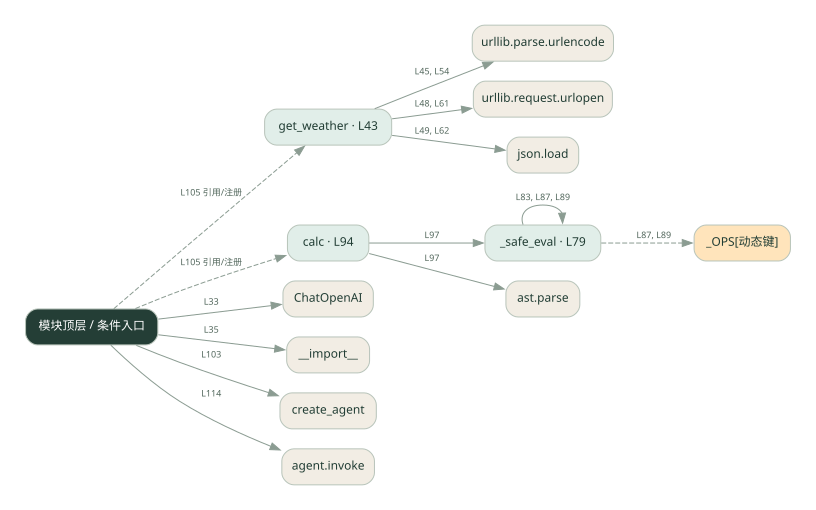

3-1 · 全课程第 41 节
框架工具调用 Agent
038_real.py
源码快照 2ab03924af0b · 静态解析 · 2026-09-10
01 / 要完成的事
把天气与计算工具交给 Agent，模型选择工具，框架或循环执行并回传结果。
02 / 为什么要做
手写循环要处理工具描述、参数和消息回填，框架可以统一这些环节。
03 / 当前代码状态
使用 ChatOpenAI 和 create_agent 连接真实模型；get_weather 先查城市坐标，匹配成功后再查天气，共两次 Open-Meteo HTTP 请求；无匹配城市时提前返回。calc 用 AST 白名单计算，不执行任意 Python 语句。框架根据模型回复动态调用注册工具，静态图中的注册边不代表每次都会调用。
存在外部服务或模型依赖；执行前需按源文件配置依赖和凭据，可能联网或产生 API 费用。 本次只做静态解析，没有运行练习，也没有替你填写或修改原代码。
04 / 调用图
打开大图 ↗实线：源码中的直接调用；虚线：函数引用/注册、动态调用或按方法名推断的候选。L 是调用所在源码行号。箭头不表示执行顺序或每次必经；分支、循环、异步调度及框架内部调用需结合源码。灰色是外部/未解析目标，橙色是动态分发；省略 print、len 和常规容器操作以减少干扰。孤立函数可能尚未接入。

先从 模块入口 出发，沿箭头找到本文件函数，再查看外部调用或动态分发。右侧调用清单保留所有静态调用点，能回到原文件逐行对照。
05 / 函数定位
| 函数 / 定义行 | 职责（源码注释） | 内部调用 |
|---|---|---|
get_weatherL43 | 查询某个城市的实时天气。参数 city 是中文城市名，如「北京」。 | urllib.parse.urlencode, urllib.request.urlopen, json.load, geo.get, codes.get |
_safe_evalL79 | 以源码函数体为准；下列调用展示其依赖。 | type, ValueError, isinstance, _safe_eval, _OPS[动态键] |
calcL94 | 计算数学表达式，如 3*(5+2)。支持 + - * / 和括号。 | str, _safe_eval, ast.parse |
这样做的优点
更容易增减工具和复用调用协议。
代价与局限
框架增加版本依赖和调试层次；工具本身的正确性仍需自己负责。
适用场景
工具数量逐渐增加的助手原型。
不宜直接照搬
极简规则流程，或必须精确控制每一个调用细节且不愿引入框架的项目。
动手检验理解
给出同时需要天气和算术的问题，检查工具结果是否都进入最终回答。
有未实现位置时先预测，再补齐验证。能启动不等于逻辑正确。
查看全部 38 个静态调用 / 引用点
| 调用方 | 目标 | 源码行 | 类型 |
|---|---|---|---|
| <模块入口> | ChatOpenAI | 33 | 调用 |
| <模块入口> | __import__ | 35 | 调用 |
| get_weather | urllib.parse.urlencode | 45 | 调用 |
| get_weather | urllib.request.urlopen | 48 | 调用 |
| get_weather | json.load | 49 | 调用 |
| get_weather | geo.get | 50 | 调用 |
| get_weather | urllib.parse.urlencode | 54 | 调用 |
| get_weather | urllib.request.urlopen | 61 | 调用 |
| get_weather | json.load | 62 | 调用 |
| get_weather | codes.get | 67 | 调用 |
| _safe_eval | type | 80 | 调用 |
| _safe_eval | ValueError | 81 | 调用 |
| _safe_eval | type | 81 | 调用 |
| _safe_eval | isinstance | 82 | 调用 |
| _safe_eval | _safe_eval | 83 | 调用 |
| _safe_eval | isinstance | 84 | 调用 |
| _safe_eval | isinstance | 84 | 调用 |
| _safe_eval | isinstance | 86 | 调用 |
| _safe_eval | _OPS[动态键] | 87 | 调用 |
| _safe_eval | type | 87 | 调用 |
| _safe_eval | _safe_eval | 87 | 调用 |
| _safe_eval | _safe_eval | 87 | 调用 |
| _safe_eval | isinstance | 88 | 调用 |
| _safe_eval | _OPS[动态键] | 89 | 调用 |
| _safe_eval | type | 89 | 调用 |
| _safe_eval | _safe_eval | 89 | 调用 |
| _safe_eval | ValueError | 90 | 调用 |
| calc | str | 97 | 调用 |
| calc | _safe_eval | 97 | 调用 |
| calc | ast.parse | 97 | 调用 |
| <模块入口> | create_agent | 103 | 调用 |
| <模块入口> | print | 111 | 调用 |
| <模块入口> | print | 112 | 调用 |
| <模块入口> | print | 113 | 调用 |
| <模块入口> | agent.invoke | 114 | 调用 |
| <模块入口> | print | 120 | 调用 |
| <模块入口> | get_weather | 105 | 引用/注册 |
| <模块入口> | calc | 105 | 引用/注册 |